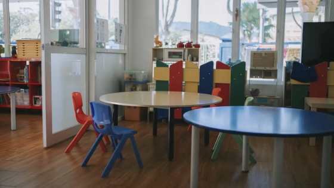
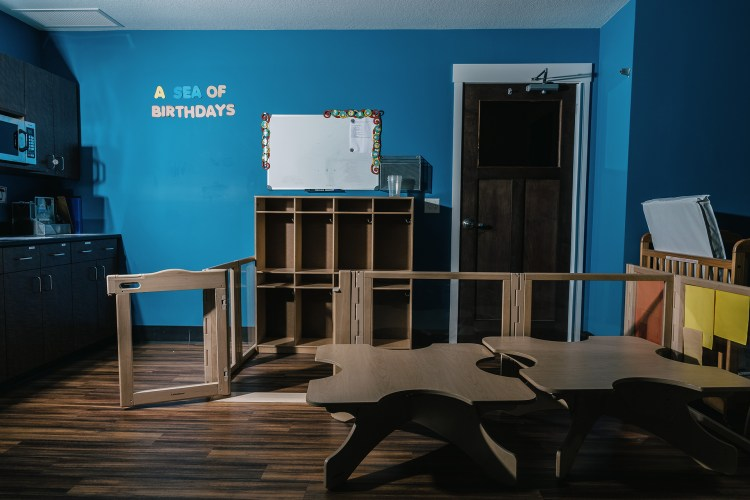
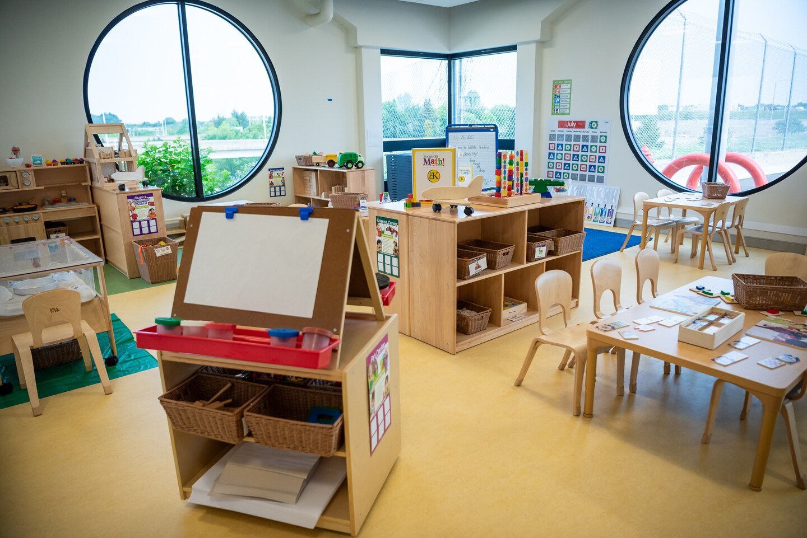

Featured Coverage


Washington Post
Newest way to woo workers: Child care at airports, schools and poultry plants
October 29, 2023
Recent Coverage
New Mexico’s Bet on Universal Child Care
The Dispatch, April 22, 2026
Shapiro pitches student teacher, child care worker raises
Spotlight PA, February 12, 2026
NYC to provide expansion of free child care in "high-need" areas
Marketplace, January 8, 2026
The Truth About Immigration That MAGA Doesn’t Acknowledge
The Atlantic, December 2025
How one center is adapting to New Mexico's "universal" child care
Marketplace, November 11, 2025
2025 Research Roundup: 3 Pressing Themes Shaping Early Care and Education
The 74 / Early Learning Nation, December 29, 2025
New Mexico to become first state to offer free universal child care
Marketplace, September 8, 2025
S4E22 Jessica Brown, Labor Economist, University of South Carolina
The Mixtape with Scott, 2025
This PA county added 100s of new child care spots in 1 year
Spotlight PA, March 2025
2024 Research Roundup: 3 Must-Read Studies About Early Care and Education
The 74 / Early Learning Nation, January 7, 2025
Additional Coverage
More SC companies offering child care benefits to attract workers
South Carolina Daily Gazette / Post and Courier, November 14, 2023
End-of-year research roundup: Three economic studies for building a better child care sector
The 74 / Early Learning Nation, 2023
Families are paying an average of 30% more for child care than they did in 2019
NPR Marketplace Morning Report, October 31, 2023
Economic Report of the President 2023
The White House, 2023
Baby's first market failure
NPR Planet Money, February 3, 2023
California pays child care providers less than their costs
San Diego Union-Tribune, January 15, 2023
California's child care crisis: How three families are fighting to stay afloat
Los Angeles Times, January 19, 2023
New York poised to increase child care budget by billions, which could help women reenter the workforce
The 19th, March 31, 2022
Omicron is the latest disaster for working parents
CNN Business, January 14, 2022
The Unintended Consequences of Universal Preschool
EdSurge, May 10, 2021
Child Care in Crisis: Can Biden's Plan Save It?
New York Times, March 31, 2021